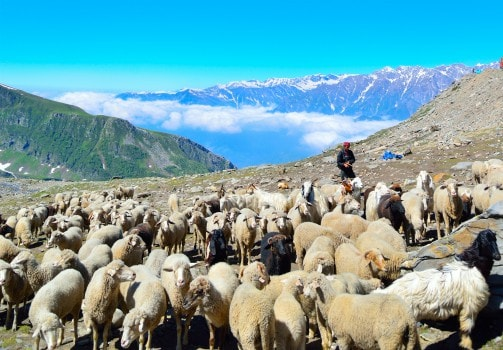
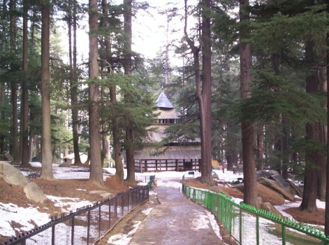
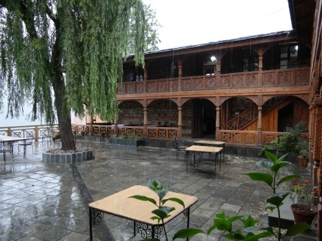
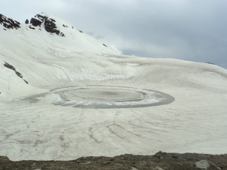

A gift of the Himalayas to the world, Manali is a beautiful township nestled in the picturesque Beas River valley. It is a rustic enclave known for its cool climate and snow-capped mountains, offering respite to tourists escaping scorching heat of the plains. The tourism industry in Manali started booming only in the early 20th century, mainly because of its natural bounties and salubrious climate.
Once a sleepy village, the modern town cocooned in its rich cultural heritage and age-old traditions is now one of the most popular destinations of India. The place is a classic blend of peace and tranquility which makes it a haven for nature lovers and adventure enthusiasts, who want to get off the main tourist trails and experience nature up close.
The glacial water of River Beas after rushing down the slopes of Rohtang Pass allows adventure sport activities of rowing, white water rafting and river crossing as it meanders through the valley from Manali to Kullu.
The open valley with terraced fields dotted with hotels and resorts has tourists converge on this township in summer from April to July and in autumn to early winter from October to December.
If you have ever imagined of sitting by the gushing water of a snow-fed stream, or waking up to a glorious sunrise with breathtaking views to soak in, Manali is the place to be.
Language: Hindi, Punjabi, English are understood and spoken by the people engaged in tourism trade. Local usually speak the Kulluvi dialect in their everyday dealings.
Clothing Essentials:With increasing altitude, the temperature falls in the valley and weather can change very abruptly in this region. Thunderstorms and sudden snowfalls do cause a sharp drop in temperature turning an otherwise warm day into a cold one in a matter of minutes. Woolens are essential when visiting Manali. In summers, light woolens with a scarf for the evenings will have you prepared should it get chilly.
|  | Rohtang Pass On a meandering uphill road, 51 km away from Manali, Rohtang Pass is an ace tourist attraction that elevates your travel experience. The pass gives summer access to the land of Lahaul and Spiti. Heavy snow closes the pass in late November which after much effort is again opened six months later by May. |
|
Solang Nullah:
An open meadow running along a slope surrounded by a deodar rich forest in the midst of high peaks around, Solang Nullah, 13 km from Manali, is one of the most beautiful tourist spots on the outskirts of the resort township. Solang bustles with tourism activity both in the summer and winters. A variety of adventure sporting activities that include quad-bike rides, zorbing, paragliding and gondola (ropeway) ride, rock climbing, ballooning, camping and mountaineering can be indulged in at Solang. |

|
|  | Hidimba Devi Temple Known as the Dhungri Temple, this temple with the presiding deity of Manali is in close proximity of the town center Mall Road. Built on a strong stone foundation, the temple shikhar rises as high as deodar trees surrounding it in a four-tier pagoda style wood and stone structure. The temple dates back to the 16th century. The temples sanctum sanctorum is a cave shrine that is believed to have foot imprints of Hidimba Devi. The Hindu epic Mahabharata has Hidimba as one of the wives of Bhima, one of the five Pandavas princes in the story. Manali is perhaps the only place in India where she is worshipped as a goddess. The temple attracts devotees and architecture lovers from around the world. |
|
Naggar:
Overlooking the valley from high up on the left bank side of the Beas River, Naggar, 22 kms from Manali, served as the capital of the principality before it moved to Sultanpur, Kullu in 1660 AD. Many monuments and temples along with a 500 year palace castle scattered around Naggar bear testimony of the importance the place once held. |
 |
.jpg) |
Vashisht Village Vashisht is a sacred village that can be easily reached by a paved path from Manali market. The village has a temple dedicated to sage Vashisht, who finds mention in the Rig Veda, the oldest religious book of the Hindus. Apart from the temple, a hot water spring bath is what makes this small village worth a visit. |
|
Brighu Lake:
At the base of Bhrigu Peak, this small lake (altitude 4,235 meters) attracts a number of trekkers every year. Like a Himalayan jewel, the lake is flanked by snow-clad mountains on all sides. Legend has it that sage Bhrigu meditated at this place. Locals hold it sacred and believe that gods and goddesses from the valley do come here for a holy dip. |
 |
The Manali Gompa
Close to the Mall, this Buddhist monastery greets you with its bright colours. A large Buddha statue at the entrance, freshly painted facades, mowed lawns and colourful murals on the wall depicting Buddha’s life hand out a deeply spiritual experience. The monastery was built in the early 1960’s.
Manu Temple, Old Manali
At a walking distance from Manali town, Manu Temple in Old Manali is a fine stone and wood monument roofed with slate tiles. The temple is devoted to Rishi Manu, a sage who codified the Hindu laws in the book Manusmriti. A temple of Manu is rare in the country and Manali derives its very name from Manu Alya, sanctified in the temple.
Mountaineering Institute, Manali
The Atal Bihari Vajpayee Institute of Mountaineering and Allied Sports is one of the pioneer institutes of the country that has promoted adventure sports in the country. The institute offers basic to advanced level courses in mountaineering, rock climbing, trekking, river rafting, paragliding and other adventure sport disciplines.
Jagat Sukh Village
Jagat Sukh served as the capital of Kullu before it was first moved to Naggar and then to Sultanpur. The Gauri Shankar Temple dedicated to Lord Shiva and the Gayatri Temple is a testimony of the times when life in the valley centred around this village.
Nehru Kund
On the way to Rohtang Pass, 5 km beyond of Manali, is a little spring fed by the sacred waters from Brighu Lake. Jawaharlal Nehru, India’s first prime minister during his regular visits to Manali would only drink water from this spring. With time it has acquired the name Nehru Kund.
Manali Wildlife Sanctuary
A dense forest of deodar, kail, walnut and maple trees that shelters a lot of shy Himalayan wildlife is a great getaway for nature lovers. The sanctuary starts about 2 km from Manali. A bridle path darkened by the dense forest cover takes you past Dhungri temple to Gallant thatch. The alpine grassland and glaciers beyond Gallant thatch is a great camping site to observe the wildlife around. The birds and animals and birds that can be sighted include the Monal, Musk deer and Brown bear. Venturing further up to the snowline during summers, one can even sight Blue Sheep, Ibex and the evasive Snow leopard.